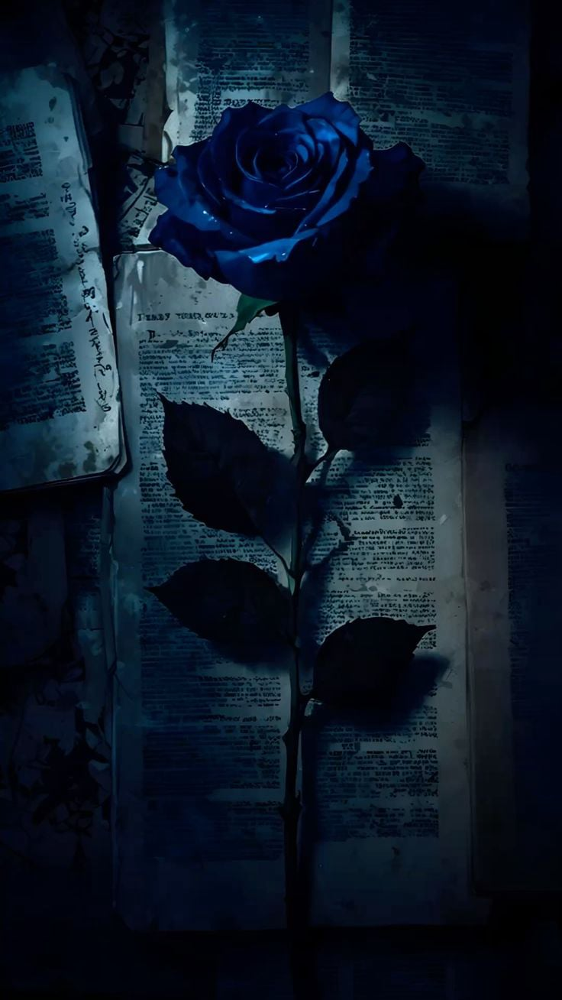

Resolvi guardar isso aqui num lugar que só eu sei onde fica. Não por segredo, mas por respeito — ao que foi, ao que não foi, e a ela também. Algumas histórias a gente não apaga, só aprende a guardar num lugar mais calmo, onde não doem mais do que ensinam.
Essa foi uma dessas. Teve dias em que eu achei que estava vivendo algo simples, e no meio do caminho descobri que era mais profundo do que eu sabia nomear. Teve beijos que vieram com perguntas que ficaram sem resposta, abraços que pareciam dizer tudo e no dia seguinte o silêncio dizia outra coisa. Teve confiança — muita — e também teve confusão. Teve uma dança que, olhando agora, vejo que era bonita mesmo desajeitada.
Escrevo não para mandar, não para mostrar, não para consertar. Escrevo porque coisas que a gente vive e não registra correm o risco de virar só memória borrada, e essa aqui merece ter a forma que eu escolher dar a ela. No fundo, é uma carta que não vai ser enviada. É um final que eu escrevo para mim, para poder seguir sem achar que ficou algo pendurado no ar.
O site que fiz para ela foi um presente em outro tempo. Esse texto, que vai dentro de um ebook que ninguém vai abrir, é um presente que eu me dei agora. Uma forma de olhar para trás sem querer voltar. De agradecer pelo que foi e de aceitar que o que podia ser não aconteceu — e tá tudo bem.
Se um dia ela encontrar isso aqui, que leia como quem encontra uma carta perdida num livro antigo. Não como cobrança, não como convite. Só como lembrança de alguém que, em algum momento, escolheu guardar com cuidado o que viveu com ela.
Aprendi com essa história que amor não se prova com insistência, que cuidado vira sufoco quando não é pedido, e que não basta desistir internamente — é preciso dizer, para que o outro não passe o resto do tempo tentando ler nos gestos o que já não existe.
Por isso, agora, eu deixo aqui. Não na espera. Só na memória...
Do jeito que merece ficar.